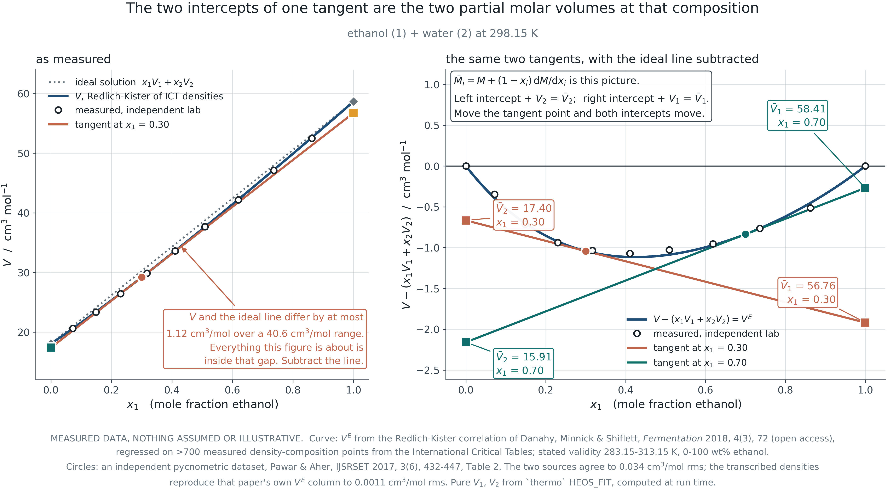
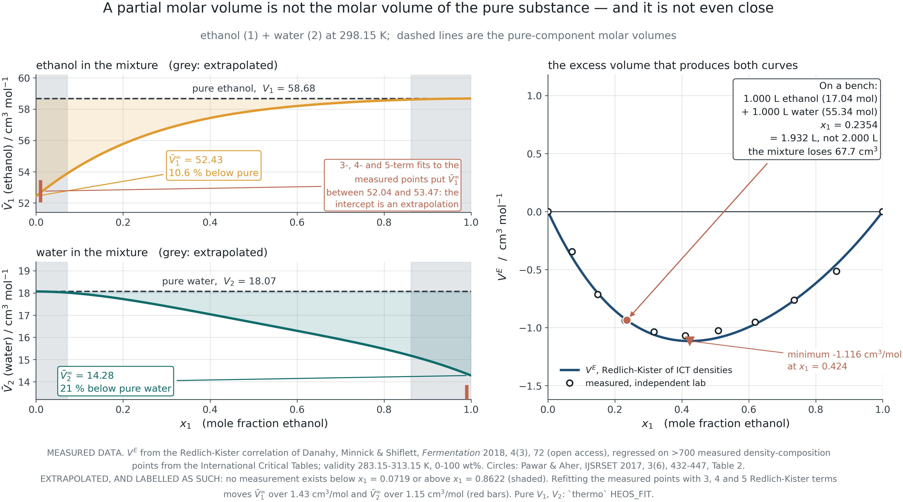
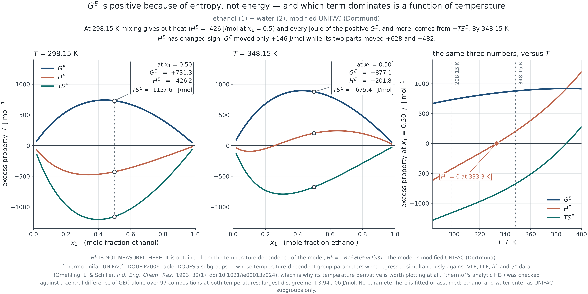
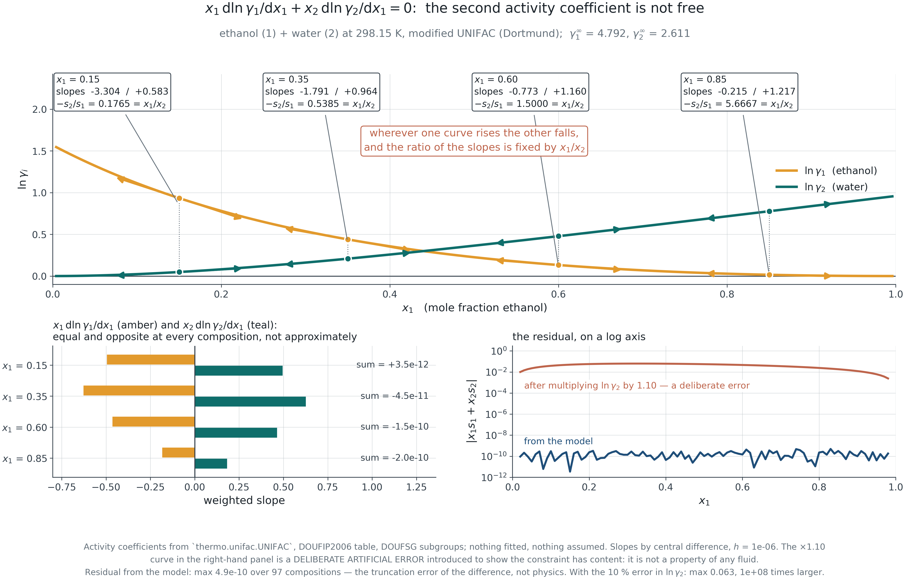
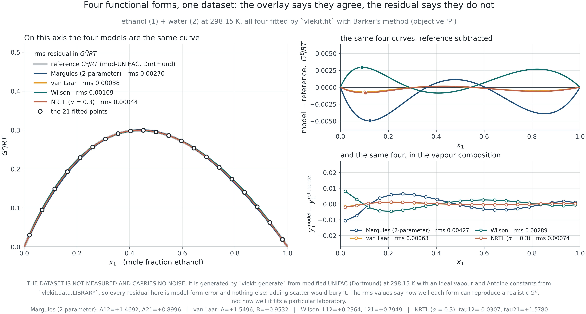
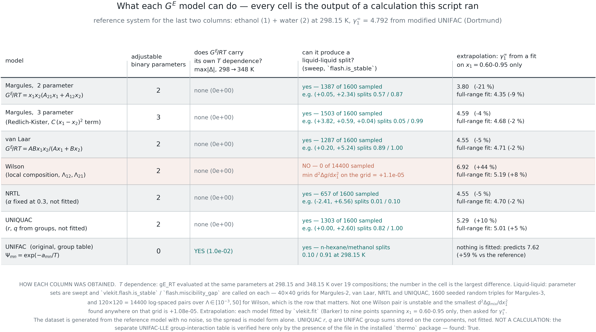

Module 3 · 2105603 Advanced Chemical Engineering Thermodynamics
9 August 2026
A partial molar property is not a property of the pure substance.
Mix one litre of ethanol with one litre of water
and you get 1.93 litres.
Introduction
The mixture toolkit, with the rigour Module 1 applied to pure fluids: partial molar properties, fugacity in a mixture, excess properties, activity, and the constraint that ties them together.
The callback
The mixture fugacity coefficient is a composition derivative of the same residual Helmholtz energy Module 1 built. The equation of state is not left behind when mixtures arrive; it is differentiated once more.
Five questions
PART I
Section 3.1 A composition derivative, a tangent construction, and a constraint that returns in Module 4.
3.1 · Partial molar properties
The contribution one species makes to a mixture property, at fixed everything else.
\bar M_i \equiv \left(\frac{\partial (nM)}{\partial n_i}\right)_{T,P,n_{j\ne i}} \qquad\qquad nM = \sum_i n_i \bar M_i \qquad\qquad M = \sum_i x_i \bar M_i
Why T, P and n_j are all fixed
Change any of them and you are measuring something else. The subscripts are not decoration: a derivative at constant T and V is a different quantity with a different value, and the two get confused constantly.
What the Euler relation says
The mixture property is exactly the mole-weighted sum of the partial molar values — with no leftover term. That is not obvious, and it is the reason the partial molar quantity is the right way to apportion a mixture property among its species.
3.1 · Partial molar properties

F3.1 · Measured ethanol/water molar volume at 298.15 K. The tangent’s two intercepts are the partial molar volumes.
3.1 · Partial molar properties

The number
At infinite dilution in water, the partial molar volume of ethanol falls about 11 % below its pure molar volume, and water’s falls about 21 % below its own. Adding a mole of ethanol to a large volume of water adds less volume than a mole of pure ethanol occupies.
Why
Water’s hydrogen-bonded network has voids. A small solute can sit in them, so the mixture takes up less room than the sum of the parts. In systems with stronger effects — an electrolyte in water — the partial molar volume of the salt is genuinely negative.
F3.2 · From the same measured data, differentiated. The infinite-dilution values are extrapolations and the figure marks the region where no data exist.
3.1 · Partial molar properties
Write it with all its terms before dropping any, because the dropped ones come back in Module 4.
\left(\frac{\partial M}{\partial T}\right)_{P,x}{\rm d}T + \left(\frac{\partial M}{\partial P}\right)_{T,x}{\rm d}P - \sum_i x_i\,{\rm d}\bar M_i = 0
\xrightarrow[\ \text{constant } T,\,P\ ]{}\qquad \sum_i x_i\,{\rm d}\bar M_i = 0
What it means
The partial molar properties of a mixture are not independent functions of composition. Specify one across the range and the other is determined. This is a constraint imposed by thermodynamics, not a modelling convenience.
The dropped terms
Constant T and P is the usual specialisation and it is the one every textbook uses. Isobaric VLE data are not at constant T, so the temperature term survives — as an excess enthalpy contribution that most published consistency tests quietly drop. Module 4 quantifies it.
PART II
Section 3.2 The composition derivative promised at the end of Module 2.
3.2 · Chemical potential and fugacity in a mixture
Nothing mysterious. It is the partial molar Gibbs energy, and it inherits every property partial molar quantities have.
\mu_i \equiv \left(\frac{\partial (nG)}{\partial n_i}\right)_{T,P,n_{j\ne i}} = \bar G_i
\hat f_i \ \text{ defined by }\ {\rm d}\mu_i = RT\,{\rm d}\ln \hat f_i \qquad\qquad \hat\varphi_i = \frac{\hat f_i}{y_i P}
The pattern repeats
Module 2 defined f so that {\rm d}\mu = RT\,{\rm d}\ln f held for a pure fluid. The mixture definition is the same construction applied to \mu_i, with \hat f_i / (y_i P) \to 1 as P \to 0 fixing the constant.
Where Gibbs-Duhem bites
Because \mu_i is a partial molar property, \sum_i x_i\,{\rm d}\mu_i = 0 at constant T and P — and therefore \sum_i x_i\,{\rm d}\ln\hat f_i = 0. The constraint is inherited, not added.
3.2 · Chemical potential and fugacity in a mixture
\ln\hat\varphi_i is the composition derivative of the residual property Module 1 built. The equation of state carries straight into mixtures.
\ln\hat\varphi_i = \frac{1}{RT}\int_\infty^{V}\! \left[\left(\frac{\partial P}{\partial n_i}\right)_{T,V,n_{j}} - \frac{RT}{V}\right]{\rm d}V \; - \ln Z
For Peng-Robinson
With the van der Waals one-fluid rule a = \sum_i\sum_j x_ix_j\sqrt{a_ia_j}(1-k_{ij}) and b = \sum_i x_i b_i, the integral closes and gives a formula of the same shape as the pure-component one plus two composition-derivative terms — \bar b_i/b and \sum_j x_j a_{ij}/a.
Why this matters later
This is the \hat\varphi_i that appears in the gamma-phi equation of Module 4, in the phi-phi route of Module 5, and in K_\varphi in Module 6. It is computed once and used in three later modules.
3.2 · Chemical potential and fugacity in a mixture
The Lewis-Randall rule is an assumption about behaviour, not a definition. Saying so now prevents a lot of confusion in Module 4.
\hat f_i^{\,\rm id} = x_i f_i \qquad\qquad \bar M_i^{\,\rm id} = M_i \ \ \text{for } V \text{ and } U, \qquad \bar G_i^{\,\rm id} = G_i + RT\ln x_i
What it assumes
That a molecule of i sees the same environment in the mixture as in pure i. True when the species are chemically almost identical — benzene and toluene — and false the moment hydrogen bonding or a size disparity enters.
Why the entropy term survives
Even an ideal solution has \bar G_i \ne G_i: there is an entropy of mixing whatever the interactions are. Ideality is a statement about energies, not about entropy — which is why \Delta g_{\rm mix} never vanishes and why Module 5’s stability argument has an ideal part that always favours mixing.
PART III
Section 3.3 Departure from an ideal solution, and the reference state that decides the number.
3.3 · Excess properties, activity and the reference state
A residual property is measured against an ideal gas. An excess property is measured against an ideal solution. Different baselines, different questions.
M^E \equiv M - M^{\,\rm id} \qquad\qquad a_i \equiv \frac{\hat f_i}{f_i^{\,\circ}} \qquad\qquad \gamma_i \equiv \frac{a_i}{x_i} = \frac{\hat f_i}{x_i f_i^{\,\circ}}
Why not an ideal gas
Because the departure of a liquid from an ideal gas is enormous and almost entirely uninteresting — it is dominated by condensation, which is a pure-component effect. The departure from an ideal solution isolates what mixing did.
The central identity
\frac{G^E}{RT} = \sum_i x_i \ln\gamma_i
and \ln\gamma_i is the partial molar quantity of G^E/RT. Everything in Modules 4 and 5 rests on that one line.
3.3 · Excess properties, activity and the reference state

F3.3 · G^E = H^E - TS^E at two temperatures. H^E here is a model derivative, not a calorimeter reading — the figure says so.
3.3 · Excess properties, activity and the reference state
The same physical system gives different numerical \gamma under the two conventions. Two papers can disagree without either being wrong.
Lewis-Randall
f_i^{\,\circ} = f_i, the pure liquid, so \gamma_i \to 1 as x_i \to 1.
Natural for a solvent, or for components of comparable amount. The convention used throughout Modules 4 and 5.
Henry
f_i^{\,\circ} = \mathcal{H}_i, the Henry constant, so \gamma_i^* \to 1 as x_i \to 0.
Natural for a dissolved gas or a solute that never approaches purity — and essential when the pure liquid does not exist at those conditions.
\gamma_i^* = \gamma_i / \gamma_i^\infty. The conversion is one division, and the number changes by whatever \gamma_i^\infty happens to be — often a factor of five or more. A \gamma without its convention is not a number.
PART IV
Section 3.4 \gamma_1 and \gamma_2 are not independent functions. Fitting them separately is not allowed.
3.4 · Gibbs-Duhem as a constraint on activity coefficients
\sum_i x_i\,{\rm d}\ln\gamma_i = 0 \qquad\Longrightarrow\qquad x_1 \frac{{\rm d}\ln\gamma_1}{{\rm d}x_1} + x_2 \frac{{\rm d}\ln\gamma_2}{{\rm d}x_1} = 0
Opposite signs, fixed ratio
Wherever one curve rises the other must fall, and the slopes stand in the ratio -x_2/x_1. Not approximately — exactly, at every composition.
At the ends
As x_1 \to 1, {\rm d}\ln\gamma_1/{\rm d}x_1 \to 0: the curve for the abundant component must flatten. A fitted \gamma_1 with a finite slope at x_1 = 1 is not admissible, whatever its residual.
The consequence
Fitting \ln\gamma_1 and \ln\gamma_2 as two independent functions produces a pair that thermodynamics forbids. Fitting one G^E and differentiating it cannot — which is the whole reason models are written as G^E.
3.4 · Gibbs-Duhem as a constraint on activity coefficients

F3.4 · Paired tangents at four compositions. The slope ratio equals -x_2/x_1 at every one.
PART V
Section 3.5 Once you see that, the list of models stops being a list to memorise.
3.5 · Models as choices of excess Gibbs energy
Redlich-Kister is the general polynomial truncation. Margules and van Laar fall out of it.
\frac{G^E}{RT} = x_1x_2\left[A + B(x_1-x_2) + C(x_1-x_2)^2 + \cdots\right]
B = C = 0
Two-suffix Margules. One parameter, symmetric, and structurally unable to skew.
C = 0
Three-suffix Margules. Two parameters, and \ln(\gamma_1/\gamma_2) becomes quadratic in x_1 - x_2 — which is enough to produce a double azeotrope, a thing often wrongly said to need three.
van Laar
Not a truncation but a ratio of polynomials. Two parameters, and its \ln(\gamma_1/\gamma_2) has exactly one interior zero for same-sign parameters — so it cannot produce a double azeotrope, whatever the fit.
3.5 · Models as choices of excess Gibbs energy
State the physical assumption behind each, not only the algebra.
Wilson
The composition around a molecule differs from the bulk composition, Boltzmann-weighted by interaction energy. Two parameters, good temperature behaviour, and structurally incapable of liquid-liquid equilibrium.
NRTL
The same local-composition idea plus a non-randomness parameter \alpha, which gives the model a second length scale. Two fitted parameters with \alpha usually fixed at 0.3 — and it can produce a phase split.
UNIQUAC
Splits G^E into a combinatorial part from molecular size and shape — fixed by r and q, which are not fitted — and a residual part carrying the two adjustable energies. Extrapolates in composition better for that reason.
UNIFAC is UNIQUAC with the residual parameters estimated from functional groups instead of fitted. That makes it predictive — usable with no data at all — and correspondingly less accurate than a fit to your own measurements.
3.5 · Models as choices of excess Gibbs energy

F3.5 · The same G^E fitted four ways. On the upper axis the curves are indistinguishable; the residual panel is where the differences live.
3.5 · Models as choices of excess Gibbs energy

F3.6 · Every claim in the table is either derivable from the functional form or verified by a sweep run for this figure.
Closing
The module in six statements.